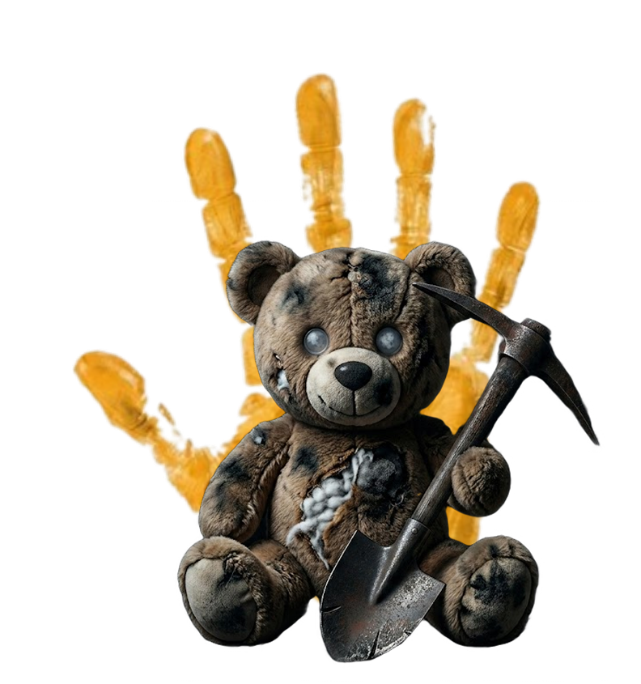
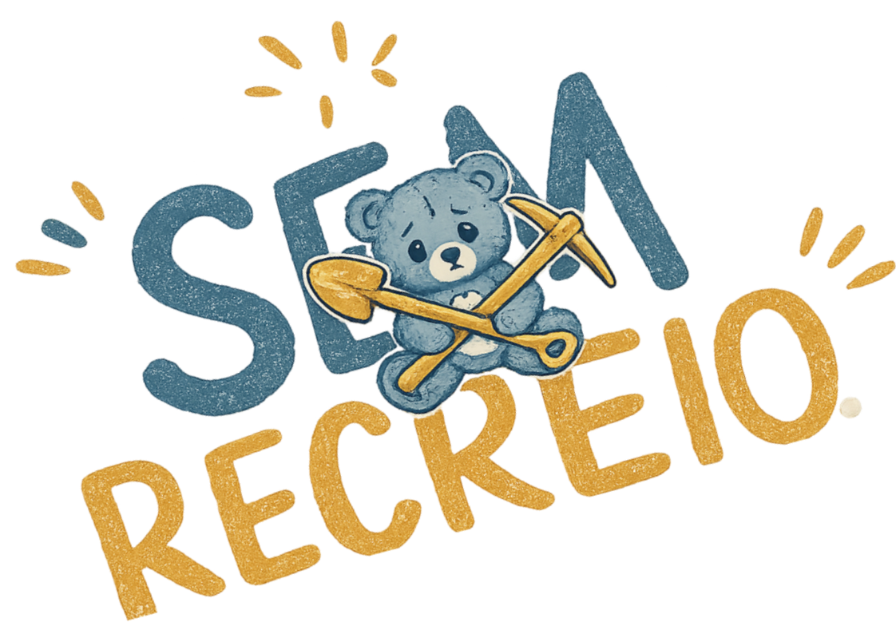

Algumas crianças nunca tiveram tempo para brincar.
O Sem Recreio é uma plataforma imersiva que conecta cidadãos e redes de apoio com um propósito urgente: romper a indiferença e combater o trabalho infantil. Aqui, o usuário pode aprender a identificar sinais de exploração invisíveis no cotidiano, encarar dados crus e relatos reais ocultos pela sociedade, e acessar canais diretos de denúncia, além de orientações práticas sobre legislação e como defender o direito fundamental de toda criança à infância e ao lazer.


A sociedade se acostumou a normalizar o inaceitável. Por muito tempo, romantizamos o "trabalho duro" de quem mal aprendeu a escrever o próprio nome. Esta plataforma não existe unicamente para oferecer apoio, mas para expor a realidade que escolhemos não ver. A conscientização exige encarar o desconforto de frente. O fim da exploração infantil não começa com pena, começa com indignação. Não desvie o olhar. Quebre o ciclo e denuncie.


Aquele que fazem o "Sem recreio" possível!